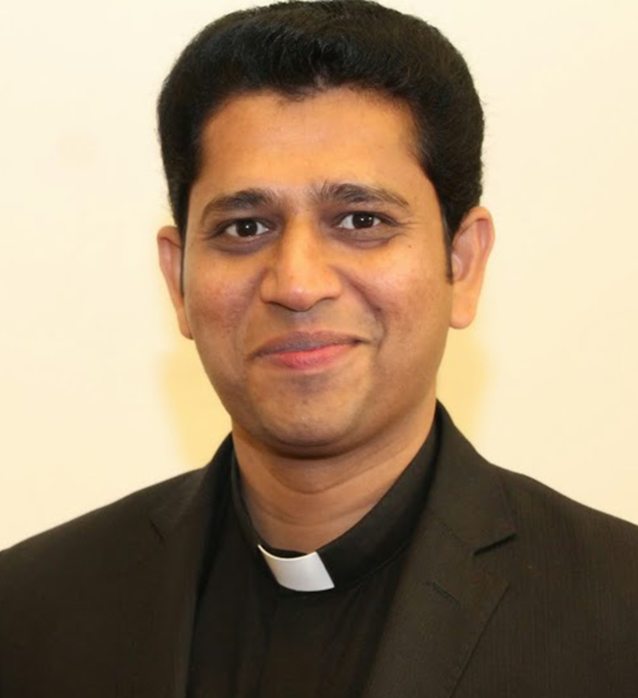

Fr. Sijo (Mathew) Tharakunnel
08/2020 - 08/2022
About
Pastoral leadership and care for the St. Mary's parish community.

Parish Vicar
Previous Vicars
08/2020 - 08/2022

09/2018 - 08/2020

10/2017 - 09/2018

07/2017 - 10/2017